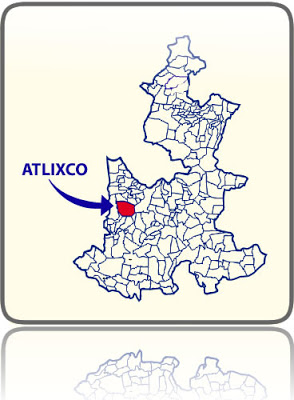

VISITANOS
Sobre Atlixco Puebla...
Heroica Atlixco es una ciudad que se localiza al suroeste de Puebla de Zaragoza, capital del estado mexicano de Puebla.
Recibio su titulo de Heroica debido a la Batalla del 4 de mayo de 1862 que precederia a la Batalla de Puebla del 5 de mayo de 1862.
Es conocido por su buen clima y la gran actividad floristica, comercial y turistica que le valieron haber sido llamada Atlixco de las Flores,
El mejor clima del mundo , y Granero de la Nueva España, durante la Epoca colonial. Desde diciembre del año 2011 un proyecto sin precedentes en el pais logra transformar esta ciudad en una Villa Iluminada',que en solo 45 dias supera ampliamente el flujo turistico de todo un año.
Recibio su titulo de Heroica debido a la Batalla del 4 de mayo de 1862 que precederia a la Batalla de Puebla del 5 de mayo de 1862.
Es conocido por su buen clima y la gran actividad floristica, comercial y turistica que le valieron haber sido llamada Atlixco de las Flores,
El mejor clima del mundo , y Granero de la Nueva España, durante la Epoca colonial. Desde diciembre del año 2011 un proyecto sin precedentes en el pais logra transformar esta ciudad en una Villa Iluminada',que en solo 45 dias supera ampliamente el flujo turistico de todo un año.
